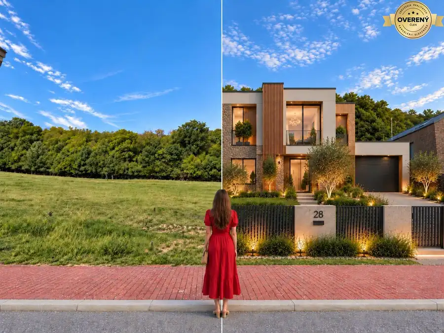
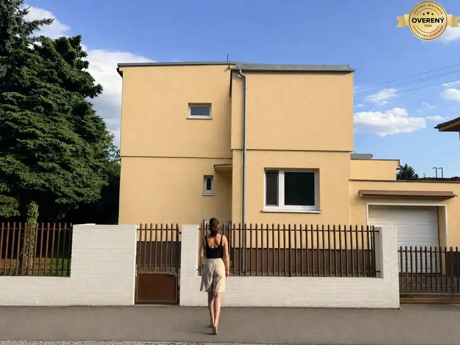

Priestranný rodinný dom s terasou, garážou a krásnou záhradou
Vrakuňa
- Plocha195 m²
- Stavpo rekonštrukcii
O nehnuteľnosti
Táto nehnuteľnosť ponúka
ideálnu kombináciu priestoru, súkromia, kvalitného technického stavu a výbornej dostupnosti do centra Bratislavy.
Dom je pripravený na okamžité bývanie bez potreby ďalších investícií.
Základné informácie:
-
Rozloha pozemku: 597 m²
-
Zastavaná plocha domu: 153 m²
- Úžitková plocha domu: 195 m²
-
Samostatná garáž: 28 m²
-
Rodinný dom na 2 podlažiach
-
Rok výstavby: 2001
-
Rekonštrukcia: 2016
-
Nová kuchyňa vrátane spotrebičov: 2025
-
Nová strecha na garáži: 2025
-
Mesačné náklady: približne 250€
-
Napojenie na mestskú kanalizáciu
-
Vlastná studňa na zavlažovanie záhrady
-
Možnosť okamžitého nasťahovania
Dispozícia
Prízemie:
- Priestranná obývacia izba s prepojením na kuchyňu
- Kompletne zrekonštruovaná kuchyňa s novými spotrebičmi (2025)
- Dve samostatné izby
- Kúpeľňa so sprchovým kútom
- Samostatné WC
- Praktická špajza / komora
- Výstup na terasu a do záhrady s grilovacou zónou
Poschodie:
- Hlavná spálňa so samostatným šatníkom
- Ďalšia izba
- Veľká kúpeľňa s vaňou
- Podkrovná miestnosť určená na odkladanie vecí alebo ako tajná miestnosť (12,5m² )
Výhody:
-
Tichá minimálne frekventovaná ulica
-
Veľká terasa
a priestor na grilovanie
- Samostatná
murovaná garáž
-
Udržiavaná záhrada
so zavlažovaním zo studne
-
Orientácia na všetky svetové strany,
hlavná časť domu smerovaná na juhozápad
-
Kompletná občianska vybavenosť v okolí
– školy, škôlky, zdravotné stredisko, obchody, MHD
-
Centrum Bratislavy dostupné približne do 10 minút autom
-
Pokojné rodinné bývanie
s dostatkom súkromia
-
Kuchynská linka a spotrebiče zostávajú súčasťou predaja ako aj všetok nábytok
Tento rodinný dom predstavuje ideálnu voľbu pre rodiny, ktoré hľadajú veľkorysý priestor, kvalitné bývanie a pokojné prostredie s výbornou dostupnosťou do mesta.
Tento dom môže byť Váš. Kontaktujte nás pre viac informácií alebo dohodnutie obhliadky.
Cena: 779 999,-€
Parametre
| Rozloha pozemku | 597 m² |
|---|---|
| Zastavaná plocha | 153 m² |
| Úžitková plocha | 195 m² |
| Poschodie | neuvedené |
| Počet poschodí | 2 |
| Stav | po rekonštrukcii |
| Voda | studňa a vodovod |
| El. napätie | 230V |
| Plyn | áno |
| Kanalizácia | áno |
| Kúpeľňa | áno |
| Vykurovanie | áno |
| Balkón | nie |
| Lódžia | nie |
| Terasa | áno |
| Garáž | áno |
| Postavené z | Zmiešané |
| Energetický certifikát | nie |
| Predzáhradka | nie |
| Terén | rovina |
| Dátum zverejnenia | 10. 6. 2026 |
Kde to je
Mohlo by Vás zaujímať

Pozemok7 Cena dohodouStavebný pozemok pre rodinný dom pri lese a pod hradom Pajštún Borinka 2038 m² Predstavte si vlastný dom v tichej a výnimočnej lokalite, kde máte les doslova za pozemkom, prírodu na dosah a zároveň ste len približne 20 minút od…
Rodinné domyRezervované5 580 000 €Dvojpodlažný rodinný dom v prestížnej štvrti Prievoz Prievoz, Bratislava 260 m² Hľadáte dom v jednej z najvyhľadávanejších lokalít Bratislavy, ktorý ponúka pokojné bývanie, krásnu záhradu a možnosť prispôsobiť si ho podľa…